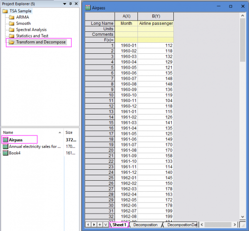
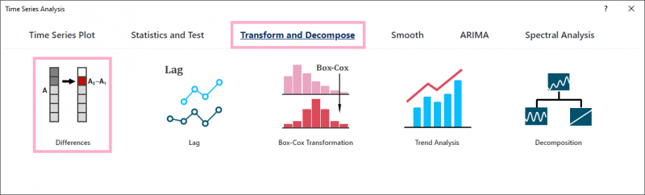
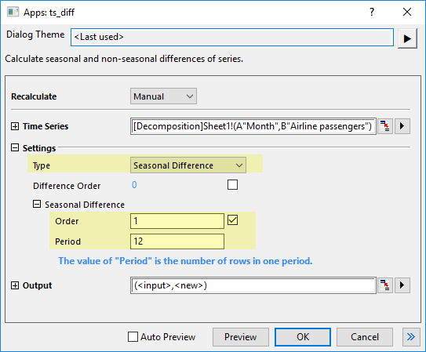
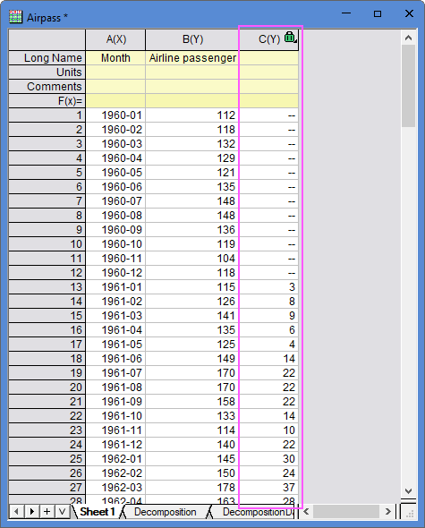
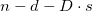

Differences Tool
TSA-TD-Diff-Tutorial
Summary
The Differences tool is supported in the Time Series Analysis App. It is used to transform a non-stationary time series into a stationary one.
A stationary time series has constant mean, variance, and autocorrelation over time, which makes it easier to model and forecast.
Tutorial
This tutorial uses App's built-in sample project. To open this sample OPJU file:
- Right click the Time Series Analysis App icon
 in the Apps Gallery and choose Show Samples Folder.
in the Apps Gallery and choose Show Samples Folder.
- A folder will open. Drag-and-drop the project file TSA Sample.opju into Origin.
Differences
- Expand Project Explorer docked on the left. Select folder Transform and Decompose and go to sheet "Sheet1" in workbook "Airpass".

- Click the Time Series Analysis App icon in the Apps Gallery. Click the button Differences under the Tranform and Decompose tab to open the app dialog.

- Select Col(B) as Time Series. For this seasonal time series dataset (the seasonal period is 12 months), select Seasonal Difference as Type, set Order to 1 and Period to 12.

- Click OK button to get the difference result.

- The results you get here is calculated by formula: C[i+12]=B[i+12]-B[i]
Algorithm
Differences tool calculates non-seasonal and seasonal differencing on a time series.
This app calls nag_tsa_diff (g13aac) function [1] to calculate.
Given a time series xi, i = 1, 2, ..., n, after non-seasonal differencing of order d and seasonal differencing of order D with period s, the transformation can be expressed as:
\end{alignat}")
The first

elements in the result are missing values.
Reference
1. nag_tsa_diff (g13aac)